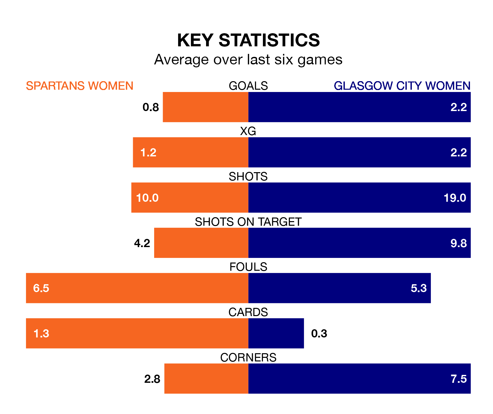

Relegation candidates Spartans Women face a challenge against high-flying Glasgow City Women at the Ainslie Park Stadium on Sunday.
Spartans Women are 11th in the SWPL 1 table, and have picked up two wins and three draws in their 16 games to date.
Glasgow City, meanwhile, are third in the standings with 38 points, having won 12 and drawn two, and are eight points behind table-toppers Rangers W.
Spartans are in terrible form in SWPL 1, with no wins and a draw from their last six games.
With four wins and a draw over that period, Glasgow City's form is much better – they have taken 13 points from 18, compared to the Spartans's one.
With 17 goals in 16 games so far this season, the home team are scoring at below the league average rate with 1.1 goals per game. And they are conceding more than average, letting in 45 goals at a rate of 2.8 per game.
The visitors, meanwhile, are above average scorers, with 2.8 goals per game, compared to a league average of 2.2. They have conceded 0.6 goals per game.
In Lee Alexander, Glasgow City can rely on one of the league's safest pair of hands. She has kept five clean sheets in her 10 appearances this season in SWPL 1.
In Spartans's net, Alicia Yates has two clean sheets in 10 games. She has conceded a goal every 37 minutes, three times as often as the 129 minutes between goals for Alexander.
Over the last two years, Spartans and Glasgow City have played each other on five occasions. Glasgow City won all of them.
Their last meeting was on October 8, when Glasgow City won 3-0 at home.
Spartans's last match was on December 17, a 1-1 draw against Montrose Women, with Erin Henderson getting the goal for the Spartans.
Glasgow City beat Partick Thistle Women 6-0 last time out, also on December 17, with Kenzie Weir (two), Lauren Davidson (two), Aleigh Gambone and Lisa Forrest on the scoresheet.
Updated: 15:34, 08/01/24